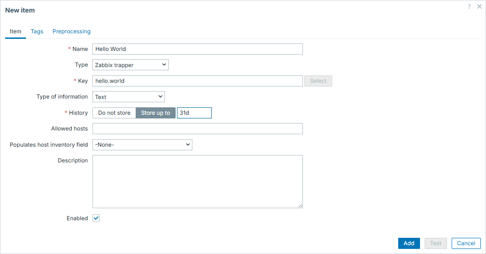
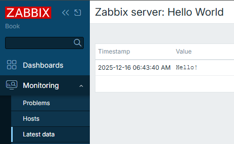
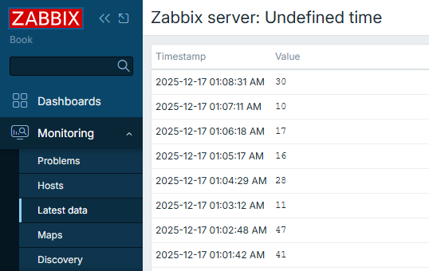
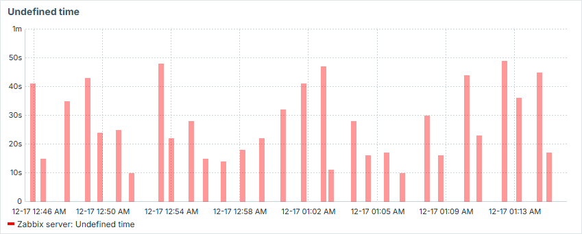
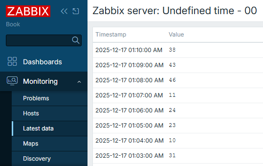
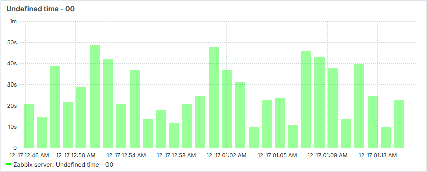
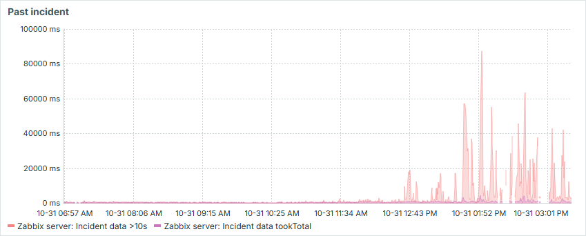
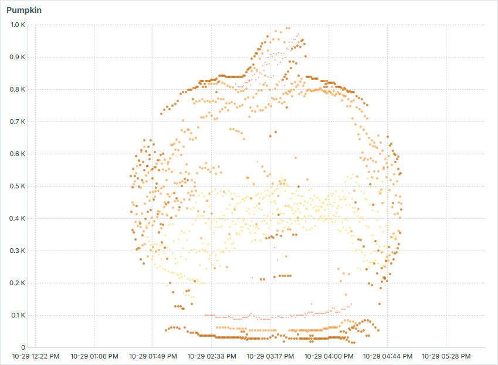
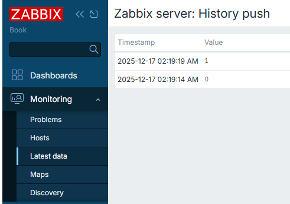

Zabbix trapper
So you already know what is the difference between Active and Passive
Zabbix agent item types. However, there is a third, special item type which
also starts with "Zabbix". And that is "Zabbix trapper".
Most likely not by coincidence it is named so, since by its nature it reminds us of the "SNMP trap". Data in both cases is not expected to arrive in predefined frequency, but rather "when needed" or "when something happens".
Zabbix trapper items are extremely useful when you have:
- places where Zabbix agent can't be installed
- scripts which are not running on the same host as Zabbix agent, but you still want to monitor some of their metrics (e.g. some web service or database)
- scripts which are running on the same host as Zabbix agent, but you don't want to run them in the context of Zabbix agent (e.g. some script is running as a different user and you don't want to give Zabbix agent access to it, or the script is running for longer than the Zabbix agent timeout, etc.)
- scripts that collect data for a multiple of Zabbix hosts at once, and you want to send the data to the different hosts on the Zabbix server in one go.
- scripts that otherwise do some other things, but at some points you want to send some data to be monitored (i.e. monitoring is just a part of the script logic, not the main intent). For example, you send the duration of how long your script was running
- temporary or ad-hoc metrics (e.g. some historical data which was not monitored at the time of occurrence to be analysed)
How to send data?
There are two ways to send values to Zabbix trapper item:
- using
zabbix_sender - via Zabbix API
Info
Zabbix trapper item receives data over the same TCP port as Zabbix agent items
(10051) when zabbix_sender is used.
In both cases, item configuration from Zabbix GUI perspective doesn't differ. Once configuring Zabbix trapper items, main thing is to have a unique meaningful item key (it must be unique on host level) and type of information of your choice. Type of information possibilities are same to classic Zabbix agent items.
Hello World
In this example, we will simply send a string "Hello!" to Zabbix trapper item.
First we will create a Zabbix trapper item on the Zabbix server. Create a new template for this purpose, and add a new Zabbix trapper item to it:
- Name:
Hello World - Type: Zabbix trapper
- Key:
hello.world - Type of information: Text

4.91 Zabbix trapper - first item
Attach this template to your Zabbix server host and apply changes.
Now, open up a shell on your Zabbix server and employ zabbix_sender to pass
the agreed value to our newly created Zabbix trapper item. You have to address
the item key from the previous step using the -k option:
Zabbix trapper - sending data with zabbix_sender
And that is about it! Our trapper item is updated.

4.92 Zabbix trapper - first item result
Info
Parameters used here are:
-z- Zabbix server or proxy hostname or IP address-s- host as defined on the Zabbix server, where your trapper item resides-k- item key of the trapper item, same as you created in GUI-o- the value you want to send to the trapper item itself
For more options, check man zabbix_sender or the online documentation
You can "travel in time" with zabbix_sender
Typically you don't need to care about timestamps as Zabbix will automatically assign the timestamp of when the value was received. This is applicable to both Zabbix agent and Zabbix trapper items. You simply set the checking frequency (in case of a Zabbix agent item) or control it on your own (in case of a Zabbix trapper item).
However in some cases you might want to have more control over the timestamps as well.
zabbix_sender offers one sometimes overlooked feature: It allows you to do
exactly what this section title describes - it allows you to "travel in time" with your
items. For this, we need to employ a combination of zabbix_sender options:
-T, --with-timestamps-i, --input-file
Info
Here is even one more overlooked feature of this approach - you actually
don't even need files necessarily. Providing - as value for -i means reading
from standard input
Next we will show you a couple of examples when this feature might be useful.
00 seconds
One of the examples when you might want to employ this feature is to force data
to be stored precisely at 00 seconds of the minute. Imagine you run a script
each minute and it might run for duration anything between 10 and 50 seconds.
This script in the end produces time in seconds, how long did it run - and you
send this duration to Zabbix via zabbix_sender:
Zabbix trapper - sending data with zabbix_sender without timestamps
For example, take this script that will log the duration of its execution
to a Zabbix trapper item called undefined.time:

4.93 Zabbix trapper - not aligned time
Problem here is that since the script runs with chaotic durations, results will be displayed on the time axis of graphs in unequal intervals between collected values:

4.94 Zabbix trapper - not aligned time graph
That is visually unappealing and we can easily fix it by forcing Zabbix to store results not when the value was sent to Zabbix server, but at the 00 seconds of the minute the script was started:
Zabbix trapper - sending data with zabbix_sender with timestamps
We adapt the previous script to use -T and -i options of zabbix_sender
to include timestamps in the sent data. We will also use - as value for -i to read
from standard input instead of a file:
#!/bin/bash
start_ts=$(date +%s)
item_value_ts=$(date -d $(date +%H:%M) +%s)
sleep $((RANDOM%40+10))
end_ts=$(date +%s)
duration=$((end_ts-start_ts))
sender_input="\"Zabbix server\" undefined.time.00 ${item_value_ts} ${duration}"
zabbix_sender -z 127.0.0.1 -T -i - &>/dev/null <<< "${sender_input}"
exit 0
Now the values are collected exactly at the 00 second of each minute:

4.95 Zabbix trapper - not aligned time
And our graph becomes smooth:

4.96 Zabbix trapper - aligned time graph
The bigger the possible gaps between the values, the more such approach makes sense.
Past incidents
Imagine you had some incident which had no or had poor monitoring. Say you regret it
and find some valuable data which you would like to visualize. With Zabbix
trapper items and combination of -T and -i options it is absolutely
possible. Just form sets of data from your data sources (e.g. logs) and feed
them into Zabbix by creating some temporary trapper items. You will then have a
view of what has happened, even if you didn't monitor it in real time.

4.97 Zabbix trapper - past incident
Have some fun
Similar to above, but in more creative fashion, you can visualize some ASCII art in Zabbix by creating sets of data aligned so in time and value amplitude, that it would form some image. That is a fun way to entertain your colleagues or just sharpen your skills in scripting!

4.98 Zabbix trapper - fun
Sending multiple values at once
We have already seen how to send a single value to a Zabbix trapper item and for
sending timestamped values we have seen how to send a value using the -i option
of zabbix_sender.
This -i option can also accept a filename as an argument. This file can contain
multiple lines, each line containing a value to be sent to a Zabbix trapper item.
Each line must be in the following format:
Info
For non-timestamped values, the format is a white-space separated list of three values:
where each value can be non-quoted or quoted using a double-quote character".
Values that contain spaces must be quoted.
Double-quotes and backslashes inside quoted values must be escaped with a
backslash \. Escaping is not supported in non-quoted values.
Multiline values are supported in a quoted value by using line-feed
escape sequences \n. Line-feed escape sequences are trimmed from the end
of the value.
for example:
"Zabbix server" hello.world Hello!
"Zabbix server" multiline.value "This is a multiline\nvalue with a \"quoted\" word and a backslash \\"
For timestamped values, when the -T option is used, the format is:
Don't mix timestamped and non-timestamped values in the same file
You can't use non-timestamped and timestamped values in the same file. Either
all values in the file should be non-timestamped or all should be timestamped
and in that case the -T option must be used when calling zabbix_sender.
If you want to send both types of values, you will need to use separate files
and separate calls to zabbix_sender.
And as you can see from the above formats, you have to include the host name as defined in Zabbix on each line. This makes it possible to send values for multiple hosts in one go.
This can be extremely useful for example when you have a script that queries a backup system and collects the status of backups for multiple hosts. You can then send all backups statuses to their respective Zabbix hosts instead of collecting them in a separate backup system 'host'.
Of course, you can also use the - value for the -i option to read from standard
input instead of a file as we did earlier in the timestamped values section. This
way you can pipe the output of your script directly to zabbix_sender without
creating a temporary file.
Using Zabbix API to send data
Instead of using zabbix_sender, you can also send data using the history.push
Zabbix API method.
Zabbix trapper - sending data with Zabbix API
Here is a simple script that will send a value to a Zabbix trapper item using
the Zabbix API. It assumes you have already obtained an API token and stored
it in a file called token.conf in the same directory as the script. Refer
to the Zabbix API chapter for more details
on how to obtain an API token.:
#!/bin/bash
zbx_url=http://127.0.0.1/zabbix/api_jsonrpc.php
zbx_header="Content-Type: application/json; charset=UTF-8"
zbx_auth_token=$(cat $(dirname "${0}")/token.conf)
params="[{\"itemid\": ${1}, \"value\": \"${2}\"}]"
payload="{\"jsonrpc\":\"2.0\",\"method\":\"history.push\",\"id\":1,\"params\":${params}}"
curl -s --max-time 3 \
-X POST \
--data "${payload}" \
-H "${zbx_header}" \
-H "Authorization: Bearer ${zbx_auth_token}" \
"${zbx_url}"
exit 0
So now by running this with the specific Zabbix trapper item key and intended value, you will update this item:
Zabbix trapper - sending data with Zabbix API - example usage
You will see the result in the Zabbix GUI Latest data section for the host where the Zabbix trapper item resides:

4.99 Zabbix trapper - API item result
Note
Starting with Zabbix 8.0, the list of allowed hosts for trapper items is predefined
through the macro {$TRAPPER.ALLOWED_HOSTS}. By default, this macro is set to
127.0.0.1,::1, allowing only connections from the local host over both IPv4
and IPv6. Change this macro to include the IP addresses or networks of any
external systems that need to send trapper data to the Zabbix server.
Conclusion
If you work with Zabbix long enough, you will start having this feeling of when to use "Zabbix trapper" items over classic "Zabbix agent" items. In some particular cases they are extremely useful (or even the only option to go with).
In this section you have learned when Zabbix trappers are most useful, as well
as how to create Zabbix trapper items and send data to them, both using zabbix_sender
and the Zabbix API. We've seen how to customize the item value timestamps recorded
by Zabbix, as well as some advanced usages.
Using Zabbix trapper is heavily related to more programmatic approaches towards updating item values, so if you are into programming and enjoy monitoring - you should definitely try it out.
Questions
- Do you need Zabbix agent if you want to use
zabbix_sender? - Does Zabbix trapper item have checking interval?
- Can you send text for Zabbix trapper items, or is it only for numerical data?